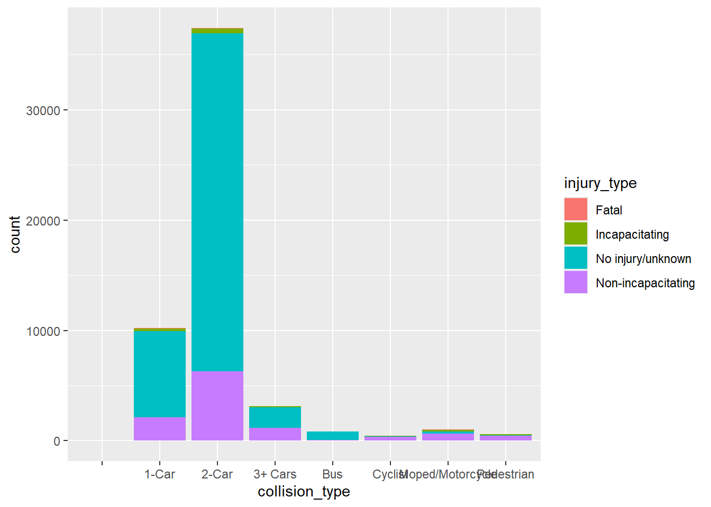

The following package(s) will be installed:
- renv [1.0.7]
These packages will be installed into "~/380project/renv/library/R-4.3/x86_64-w64-mingw32".
# Installing packages --------------------------------------------------------
- Installing renv ... OK [linked from cache]
Successfully installed 1 package in 17 milliseconds.
renv::activate()renv::install("quarto")
The following package(s) will be installed:
- quarto [1.4]
These packages will be installed into "~/380project/renv/library/R-4.3/x86_64-w64-mingw32".
# Installing packages --------------------------------------------------------
- Installing quarto ... OK [linked from cache]
Successfully installed 1 package in 17 milliseconds.
Introduction
My project here will be focused around Car Accidents asking questions such as which make(brand) of cars gets into the most accidents? How old were the drivers involved in the accidents? does age and the make of the car have a correlation between them? my goal of this project is to find out the top car makes and the demographics of the people involved in those accidents in the country and states and what caused the accident in the first place?. I believe this is important in order to address a further investigation into this concern of mine and find solutions in order to attempt to stop tragedies that take the lives of thousands of Americans every year. ML can help us in this case by finding trends, patterns, and risk factors in the car’s make and the demographic of the person in collected data sets
Illustration
I created this graph in powerpoint using information from https://www.lendingtree.com/ that shows the the most common car make in accidents in the United States, It shows us that among the top 5 is Ram, Tesla, Subaru, Volkswagen, and Mazda as the most common car makes to be in an accident. But with this image alone doesn’t tell us much. It only tells us the most common makes and not other information such as where the accidents happen?, who was the driver?, was the driver under the influence of any substances? and many other important information that is not shown here. But this is a 1st step and one of many in order to reach my end goal of the most common characteristics of a car accident.
In this article it reviews the fact that since the automotive the number of accidents has steady decrease over the past century. But in recently years only the untied states saw a increase in deaths with the involvement of a motor vehicle while others like south Korea and Canada is still seeing a decline or flattening out. This article addresses some factors that could contribute to this such as cell phone culture, lack of walk able spaces, and substances that hinders the drivers judgement. This article attempts to create an insight that is similar to mine on what is causing these crashes to happen and what could be done about it.
Data Processing
This data set was taking from https://www.kaggle.com/
This data set used records car accidents from 2003 to 2015 as well as showing us the location of the crash, how many cars were involved, was there any injuries, and what caused the crash to happened in the first place
Setting up data set for R
library(readr)#packages needed# Read the CSV file into a data framedf <-read.csv("https://raw.githubusercontent.com/andydagao/380project/main/Copy%20of%20new%20dataset.csv", sep=",")
Cleaning data set
#removing rows where it has NAdf <-na.omit(df)#setting column names to lowercasenames(df) <-tolower(names(df))#replaceing every . with _names(df) <-gsub("\\.", "_", names(df))#renaming weekend columnnames(df)[names(df) =="weekend_"] <-"weekend"
Statistics
library(ggplot2)# library needed#bar grapg of the collusion type and the injuries reported from themggplot(df, aes(x = collision_type, fill = injury_type)) +geom_bar()

As we can see from this bar graph accidents involving 2 cars is significantly higher than any of the rest with the runner up of only being 1 car accidents is not even a 3rd of accidents involving 2 cars. But thankfully we can see that most of the accidents resulted in no injuries or life threatening
#package neededlibrary(dplyr)
Attaching package: 'dplyr'
The following objects are masked from 'package:stats':
filter, lag
The following objects are masked from 'package:base':
intersect, setdiff, setequal, union
#top causes for crashestop5reasons <- df %>%select(primary_factor) %>%#select the variable of intrestcount(primary_factor) %>%#count frequency arrange(desc(n))%>%#arrange from highest to lowesthead(5)#get top 5 resultstop5reasons
primary_factor n
1 FAILURE TO YIELD RIGHT OF WAY 11176
2 FOLLOWING TOO CLOSELY 7345
3 OTHER (DRIVER) - EXPLAIN IN NARRATIVE 6079
4 UNSAFE BACKING 5168
5 RAN OFF ROAD RIGHT 2919
As we can see here the top 5 causes of accidents with the failure to yield the right of way being the most common way that accidents occur. Others include following to closely, Other(which could be anything), unsafe backing, or ran off road.
Some issues could be easily fix such as unsafe backing which can be solved with more sensors and cameras installed which can prevent such situations from happening, others such as failure to yield may be more difficult because it all depends on the driver’s ability